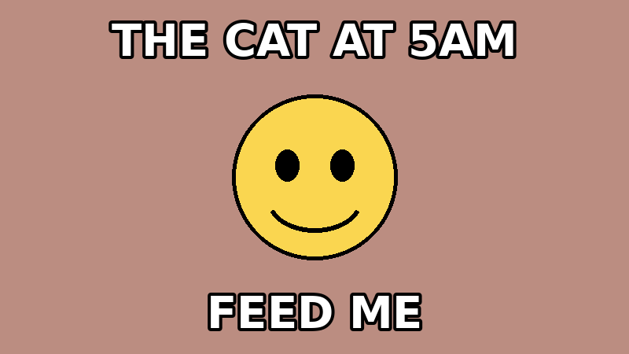

<body class="fcftm1 sijg7j g40z5z"> <div class="kkqayr" data-props='{"locale":"en"}' id="za8rli"> <div class="nr2k2z"> <div class="p8o4sc"> <div class="mak85a"> <div aria-label="Home" class="o76jfj" role="region"> <div class="rl377f"> <h1 class="v87lgr"><button class="otzdch" type="button"><svg aria-hidden="true" class="zfn2pw ifp0rt" fill="currentColor" height="18" viewbox="0 -960 960 960" width="18"></svg>Home</button><div class="in4188"><button aria-label="Show settings" class="vc70et" type="button"><svg aria-hidden="true" class="zfn2pw qpv2mf" fill="currentColor" height="18" viewbox="0 -960 960 960" width="18"></svg></button></div></h1> </div> <div class="vsz7qw" role="feed"> <div class="srmc4b"> <article class="p1rhjz" data-id="703186156187298060"> <div class="jkf8ns rbog5o" data-id="703186156187298060"> <div class="bx94se"> <a class="b52t09" href="https://photog.social/@kai_yilmaz"><div class="y6e1u4"><div class="v0jfau"></div></div><span class="t8u0uq"><bdi><strong class="xrcu5g">Kai Yilmaz</strong></bdi><span class="x63cun">@kai_yilmaz@photog.social</span></span></a> <a class="a3zn3c" href="https://photog.social/@kai_yilmaz/703186156187298060"><span class="owotwo"><svg aria-hidden="true" class="zfn2pw ffcqu7" fill="currentColor" height="18" viewbox="0 -960 960 960" width="18"></svg></span><time>1d</time></a> </div> <div class="zjwfpf ymc15u" lang="en"><div class="d4bgqx kptsvn kwtc74"><p>This explains it well: <a href="https://civicpost.net/blog/7083" rel="nofollow noopener" target="_blank">https://civicpost.net/blog/7083</a> <span class="h5mk2t"><a class="byl6f2 s6ejkr" href="https://photog.social/@mara_kim_art">@<span>mara_kim_art</span></a></span> The fox next door learned to open our gate. We are negotiating. Volunteering at the riverside path this Sunday, come say hi if you are around. 💡 <a class="s6ejkr termuj" href="https://photog.social/tags/selfhosting" rel="tag">#<span>SelfHosting</span></a> <a class="s6ejkr termuj" href="https://photog.social/tags/weather" rel="tag">#<span>Weather</span></a></p></div></div> <a class="rhi2uj" href="https://civicpost.net/blog/7083" rel="noopener" target="_blank"><div class="m4rubg"></div><div class="ahz2dy"><span class="r5z4ix"><span lang="en">civicpost.net</span></span><strong class="yz7ejs">Inside the volunteer-run the train station</strong><span class="tj7uy9">Short read, about five minutes.</span></div></a> <div class="owtt26"> <button aria-label="Reply" class="jzyy8o cc1pfz pa8icn" type="button"><svg aria-hidden="true" class="zfn2pw bjy2y5" fill="currentColor" height="18" viewbox="0 -960 960 960" width="18"></svg><span class="uaopyq"><span class="dgynyl">0</span></span></button> <button aria-label="Boost" class="jzyy8o cc1pfz pa8icn" type="button"><svg aria-hidden="true" class="zfn2pw teyjjc" fill="currentColor" height="18" viewbox="0 -960 960 960" width="18"></svg><span class="uaopyq"><span class="dgynyl">14</span></span></button> <button aria-label="Favorite" class="jzyy8o fvlkax cc1pfz pa8icn" type="button"><svg aria-hidden="true" class="zfn2pw rabmaq" fill="currentColor" height="18" viewbox="0 -960 960 960" width="18"></svg><span class="uaopyq"><span class="dgynyl">285</span></span></button> <button aria-label="Bookmark" class="jzyy8o ncxd1m p5t89r cc1pfz" type="button"><svg aria-hidden="true" class="zfn2pw ffkpw4" fill="currentColor" height="18" viewbox="0 -960 960 960" width="18"></svg></button> <div class="lo9l4a"></div> <button aria-label="More" class="jzyy8o dopql2 cc1pfz" type="button"><svg aria-hidden="true" class="zfn2pw euty6s" fill="currentColor" height="18" viewbox="0 -960 960 960" width="18"></svg></button> </div> </div> </article> <article class="p1rhjz" data-id="158468432778843834"> <div class="jkf8ns rbog5o" data-id="158468432778843834"> <div class="bx94se"> <a class="b52t09" href="https://ruby.social/@arjun_dev"><div class="y6e1u4"><div class="v0jfau"></div></div><span class="t8u0uq"><bdi><strong class="xrcu5g">Arjun Banda 🌱</strong></bdi><span class="x63cun">@arjun_dev@ruby.social</span></span></a> <a class="a3zn3c" href="https://ruby.social/@arjun_dev/158468432778843834"><span class="owotwo"><svg aria-hidden="true" class="zfn2pw ffcqu7" fill="currentColor" height="18" viewbox="0 -960 960 960" width="18"></svg></span><time>1d</time></a> </div> <div class="zjwfpf ymc15u" lang="en"><div class="d4bgqx kptsvn kwtc74"><p>My rabbit has decided the keyboard is the warmest spot in the house. Is it just me or did Debian get noticeably faster in the last release? ☕ <a class="s6ejkr termuj" href="https://ruby.social/tags/rust" rel="tag">#<span>Rust</span></a></p></div></div> <div class="y8nbuz"><div class="avnbev"><a class="pvnpda" href="#"></a><div class="mueht4"><span class="dou09u">ALT</span></div></div></div> <div class="owtt26"> <button aria-label="Reply" class="jzyy8o cc1pfz pa8icn" type="button"><svg aria-hidden="true" class="zfn2pw bjy2y5" fill="currentColor" height="18" viewbox="0 -960 960 960" width="18"></svg><span class="uaopyq"><span class="dgynyl">31</span></span></button> <button aria-label="Boost" class="jzyy8o cc1pfz pa8icn" type="button"><svg aria-hidden="true" class="zfn2pw teyjjc" fill="currentColor" height="18" viewbox="0 -960 960 960" width="18"></svg><span class="uaopyq"><span class="dgynyl">4</span></span></button> <button aria-label="Favorite" class="jzyy8o fvlkax cc1pfz pa8icn" type="button"><svg aria-hidden="true" class="zfn2pw rabmaq" fill="currentColor" height="18" viewbox="0 -960 960 960" width="18"></svg><span class="uaopyq"><span class="dgynyl">2</span></span></button> <button aria-label="Bookmark" class="jzyy8o ncxd1m p5t89r cc1pfz" type="button"><svg aria-hidden="true" class="zfn2pw ffkpw4" fill="currentColor" height="18" viewbox="0 -960 960 960" width="18"></svg></button> <div class="lo9l4a"></div> <button aria-label="More" class="jzyy8o dopql2 cc1pfz" type="button"><svg aria-hidden="true" class="zfn2pw euty6s" fill="currentColor" height="18" viewbox="0 -960 960 960" width="18"></svg></button> </div> </div> </article> <article class="p1rhjz" data-id="706067292343844331"> <div class="jkf8ns rbog5o" data-id="706067292343844331"> <div class="bx94se"> <a class="b52t09" href="https://mastodon.art/@greta_moretticodes"><div class="y6e1u4"><div class="v0jfau"></div></div><span class="t8u0uq"><bdi><strong class="xrcu5g">Greta Moretti</strong></bdi><span class="x63cun">@greta_moretticodes@mastodon.art</span></span></a> <a class="a3zn3c" href="https://mastodon.art/@greta_moretticodes/706067292343844331"><span class="owotwo"><svg aria-hidden="true" class="zfn2pw ffcqu7" fill="currentColor" height="18" viewbox="0 -960 960 960" width="18"></svg></span><time>2d</time></a> </div> <div class="zjwfpf ymc15u" lang="en"><div class="d4bgqx kptsvn kwtc74"><p>Accidentally made enough jollof rice for 68 people. Neighbours are getting some. Reading A Psalm for the Wild-Built again and it hits differently this year.</p></div></div> <div class="owtt26"> <button aria-label="Reply" class="jzyy8o cc1pfz pa8icn" type="button"><svg aria-hidden="true" class="zfn2pw bjy2y5" fill="currentColor" height="18" viewbox="0 -960 960 960" width="18"></svg><span class="uaopyq"><span class="dgynyl">5</span></span></button> <button aria-label="Boost" class="jzyy8o cc1pfz pa8icn" type="button"><svg aria-hidden="true" class="zfn2pw teyjjc" fill="currentColor" height="18" viewbox="0 -960 960 960" width="18"></svg><span class="uaopyq"><span class="dgynyl">2</span></span></button> <button aria-label="Favorite" class="jzyy8o fvlkax cc1pfz pa8icn" type="button"><svg aria-hidden="true" class="zfn2pw rabmaq" fill="currentColor" height="18" viewbox="0 -960 960 960" width="18"></svg><span class="uaopyq"><span class="dgynyl">1</span></span></button> <button aria-label="Bookmark" class="jzyy8o ncxd1m p5t89r cc1pfz" type="button"><svg aria-hidden="true" class="zfn2pw ffkpw4" fill="currentColor" height="18" viewbox="0 -960 960 960" width="18"></svg></button> <div class="lo9l4a"></div> <button aria-label="More" class="jzyy8o dopql2 cc1pfz" type="button"><svg aria-hidden="true" class="zfn2pw euty6s" fill="currentColor" height="18" viewbox="0 -960 960 960" width="18"></svg></button> </div> </div> </article> <article class="p1rhjz" data-id="500956368592243953"> <div class="jkf8ns rbog5o" data-id="500956368592243953"> <div class="bx94se"> <a class="b52t09" href="https://infosec.exchange/@zoeberg"><div class="y6e1u4"><div class="v0jfau"></div></div><span class="t8u0uq"><bdi><strong class="xrcu5g">Zoe Berg</strong></bdi><span class="x63cun">@zoeberg@infosec.exchange</span></span></a> <a class="a3zn3c" href="https://infosec.exchange/@zoeberg/500956368592243953"><span class="owotwo"><svg aria-hidden="true" class="zfn2pw ffcqu7" fill="currentColor" height="18" viewbox="0 -960 960 960" width="18"></svg></span><time>2d</time></a> </div> <div class="zjwfpf ymc15u" lang="en"><div class="d4bgqx kptsvn kwtc74"><p>Today I learned that Home Assistant has a built in profiler. Wish I knew that 96 months ago. Reminder that the bike repair cafe is open every Wednesday at the old library. Our neighbourhood mesh network now has 43 nodes running. Small</p></div></div> <button class="whzev2" type="button">Read more<svg aria-hidden="true" class="zfn2pw ti9ohx" fill="currentColor" height="18" viewbox="0 -960 960 960" width="18"></svg></button> <div class="owtt26"> <button aria-label="Reply" class="jzyy8o cc1pfz pa8icn" type="button"><svg aria-hidden="true" class="zfn2pw bjy2y5" fill="currentColor" height="18" viewbox="0 -960 960 960" width="18"></svg><span class="uaopyq"><span class="dgynyl">2</span></span></button> <button aria-label="Boost" class="jzyy8o cc1pfz pa8icn" type="button"><svg aria-hidden="true" class="zfn2pw teyjjc" fill="currentColor" height="18" viewbox="0 -960 960 960" width="18"></svg><span class="uaopyq"><span class="dgynyl">4</span></span></button> <button aria-label="Favorite" class="jzyy8o fvlkax cc1pfz pa8icn" type="button"><svg aria-hidden="true" class="zfn2pw rabmaq" fill="currentColor" height="18" viewbox="0 -960 960 960" width="18"></svg><span class="uaopyq"><span class="dgynyl">1</span></span></button> <button aria-label="Bookmark" class="jzyy8o ncxd1m p5t89r cc1pfz" type="button"><svg aria-hidden="true" class="zfn2pw ffkpw4" fill="currentColor" height="18" viewbox="0 -960 960 960" width="18"></svg></button> <div class="lo9l4a"></div> <button aria-label="More" class="jzyy8o dopql2 cc1pfz" type="button"><svg aria-hidden="true" class="zfn2pw euty6s" fill="currentColor" height="18" viewbox="0 -960 960 960" width="18"></svg></button> </div> </div> </article> </div> </div> </div> </div> <div class="v4gye4 ptrjsn"> <div class="i080ws"> <div class="ofpm9d"><span class="djk1pn">m</span><span>mastodon</span></div> <input aria-label="Search" class="gkx132" placeholder="Search or paste URL" style="" type="text"/> <a class="u027bu jf7tso ip16o7" href="#"><svg aria-hidden="true" class="zfn2pw ifp0rt" fill="currentColor" height="18" viewbox="0 -960 960 960" width="18"></svg><span>Home</span></a> <a class="u027bu jf7tso" href="#"><svg aria-hidden="true" class="zfn2pw uvr9vv" fill="currentColor" height="18" viewbox="0 -960 960 960" width="18"></svg><span>Explore</span></a> <a class="u027bu jf7tso" href="#"><svg aria-hidden="true" class="zfn2pw ffcqu7" fill="currentColor" height="18" viewbox="0 -960 960 960" width="18"></svg><span>Live feeds</span></a> <a class="u027bu jf7tso" href="#"><svg aria-hidden="true" class="zfn2pw n1s24x" fill="currentColor" height="18" viewbox="0 -960 960 960" width="18"></svg><span>Notifications</span></a> <a class="u027bu jf7tso" href="#"><svg aria-hidden="true" class="zfn2pw iy58f8" fill="currentColor" height="18" viewbox="0 -960 960 960" width="18"></svg><span>Private mentions</span></a> <a class="u027bu jf7tso" href="#"><svg aria-hidden="true" class="zfn2pw ffkpw4" fill="currentColor" height="18" viewbox="0 -960 960 960" width="18"></svg><span>Bookmarks</span></a> <a class="u027bu jf7tso" href="#"><svg aria-hidden="true" class="zfn2pw rabmaq" fill="currentColor" height="18" viewbox="0 -960 960 960" width="18"></svg><span>Favorites</span></a> <a class="u027bu jf7tso" href="#"><svg aria-hidden="true" class="zfn2pw vsubwb" fill="currentColor" height="18" viewbox="0 -960 960 960" width="18"></svg><span>Lists</span></a> <hr/> <a class="u027bu jf7tso" href="#"><svg aria-hidden="true" class="zfn2pw icrzeu" fill="currentColor" height="18" viewbox="0 -960 960 960" width="18"></svg><span>Preferences</span></a> <a class="ndjg8u" href="#">New post</a> </div> </div> </div> </div> </div> </body>